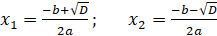
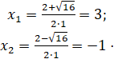
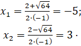
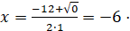
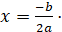

Прежде, чем изучать конкретные методы решения, заметим, что все квадратные уравнения можно условно разделить на три класса:
В этом состоит важное отличие квадратных уравнений от линейных, где корень всегда существует и единственен. Как определить, сколько корней имеет уравнение? Для этого существует замечательная вещь — дискриминант.
Дискриминант Пусть дано квадратное уравнение ax2 + bx + c = 0. Тогда дискриминант — это просто число D = b2 - 4ac.
Эту формулу надо знать наизусть. Откуда она берется — сейчас неважно. Важно другое: по знаку дискриминанта можно определить, сколько корней имеет квадратное уравнение. А именно:
Обратите внимание: дискриминант указывает на количество корней, а вовсе не на их знаки, как почему-то многие считают. Взгляните на примеры — и сами все поймете:
Задача. Сколько корней имеют квадратные уравнения:
х2 - 8x + 12 = 0;
5x2 + 3x + 7 = 0;
х2 - 6x + 9 = 0.
Выпишем коэффициенты для первого уравнения и найдем дискриминант:
a = 1, b = -8, c = 12;
D = (-8)2 - 4 · 1 · 12 = 64 - 48 = 16
Итак, дискриминант положительный, поэтому уравнение имеет два различных корня.
Аналогично разбираем второе уравнение:
a = 5; b = 3; c = 7;
D = 32 - 4 · 5 · 7 = 9 - 140 = -131.
Дискриминант отрицательный, корней нет.
Осталось последнее уравнение:
a = 1; b = -6; c = 9;
D = (-6)2 - 4 · 1 · 9 = 36 - 36 = 0.
Дискриминант равен нулю — корень будет один.
Обратите внимание, что для каждого уравнения были выписаны коэффициенты.
Да, это долго, да, это нудно — зато вы не перепутаете коэффициенты и
не допустите глупых ошибок. Выбирайте сами: скорость или качество.
Кстати, если «набить руку», через некоторое время уже не потребуется выписывать
все коэффициенты. Такие операции вы будете выполнять в голове.
Большинство людей начинают делать так где-то после 50-70 решенных уравнений —
в общем, не так и много.
Корни квадратного уравнения
Теперь перейдем, собственно, к решению. Если дискриминант D > 0, корни можно найти по формулам:
Основная формула корней квадратного уравнения
Когда D = 0, можно использовать любую из этих формул — получится одно и то же число, которое и будет ответом. Наконец, если D < 0, корней нет — ничего считать не надо.
Задача. Решить квадратные уравнения:
х2 - 2x - 3 = 0;
15 - 2x - x2 = 0;
х2 + 12x + 36 = 0.
Первое уравнение:
х2 - 2x - 3 = 0 ⇒ a = 1; b = -2; c = -3;
D = (-2)2 - 4 · 1 · (-3) = 16.
D > 0 ⇒ уравнение имеет два корня. Найдем их:

Второе уравнение:
15 - 2x – x2 = 0 ⇒ a = -1; b = -2; c = 15;
D = (-2)2 - 4 · (-1) · 15 = 64.
D > 0 ⇒ уравнение снова имеет два корня. Найдем их:

Наконец, третье уравнение:
х2 + 12x + 36 = 0 ⇒ a = 1; b = 12; c = 36;
D = 122 - 4 · 1 · 36 = 0.
D = 0 ⇒ уравнение имеет один корень. Можно использовать любую формулу. Например, первую: 
Или запомнить, когда D = 0 ⇒ уравнение имеет корень: 
Как видно из примеров, все очень просто. Если знать формулы и уметь считать, проблем не будет. Чаще всего ошибки возникают при подстановке в формулу отрицательных коэффициентов. Здесь опять же поможет прием, описанный выше: смотрите на формулу буквально, расписывайте каждый шаг — и очень скоро избавитесь от ошибок.